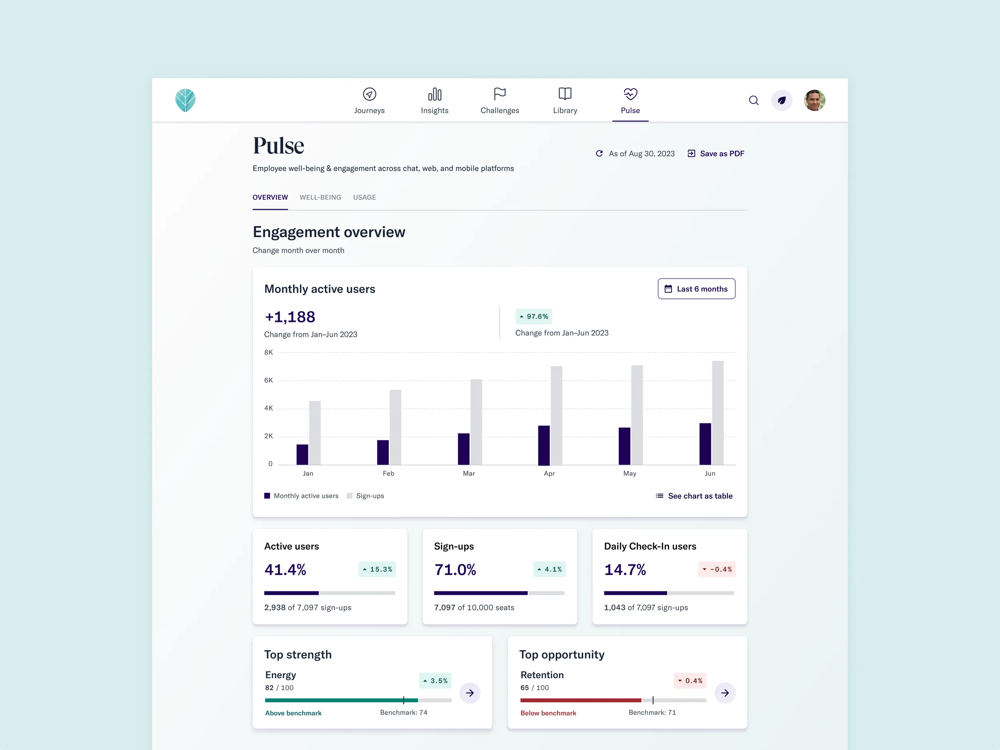
HR executives found our legacy dashboard confusing and struggled to justify Thrive's cost to their leadership teams. By understanding our customers' goals deeply, we redesigned the dashboard to surface the metrics they needed to demonstrate the ROI of investing in employee well-being.
Team: 1 designer (me), 1 product manager, 1 tech lead, 2 engineers.
Anticipated time savings for Customer Success Managers — through reduced data requests, fewer ad hoc explanations, and self-service insights for HR leaders.
The business lacked quantifiable long-term impact and relied heavily on sales tactics. CHROs hesitated to renew contracts because the dashboard didn't give them what they needed to make the case internally.
The admin dashboard didn't show aggregated data from the employee-level dashboard, making it difficult to accurately assess engagement.
The original dashboard was hastily assembled by a team that departed soon after launch. CSMs spent roughly half of every quarterly review call explaining how to interpret it.
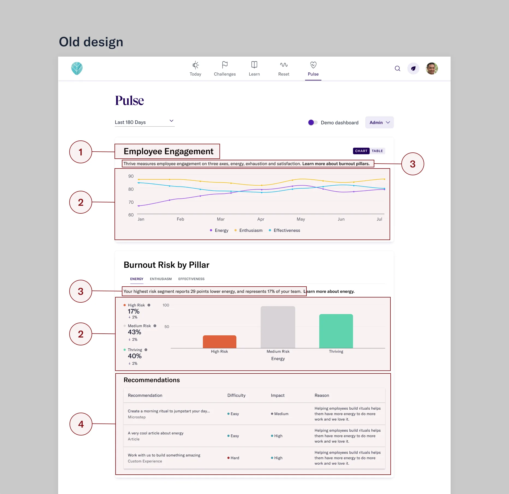
I partnered with the Customer Success team as proxies for our users, running interviews to surface their top pain points. The biggest themes: unclear content engagement data, charts that were hard to read, and ambiguous terms like "burnout" and "engagement levels" that had no consistent internal definition.
I also reviewed past customer calls, identifying moments where customers needed clarification or showed confusion. Then I collaborated with my PM to map each customer's goals and internal KPIs to the datapoints we'd surface in the dashboard.
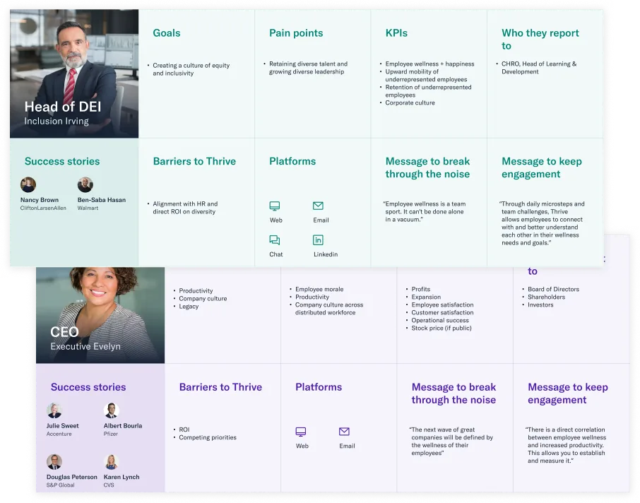
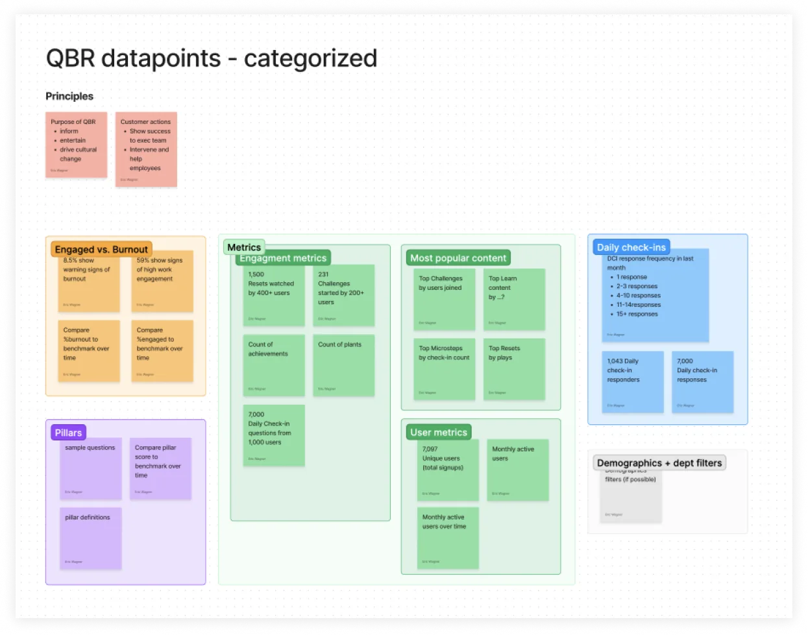
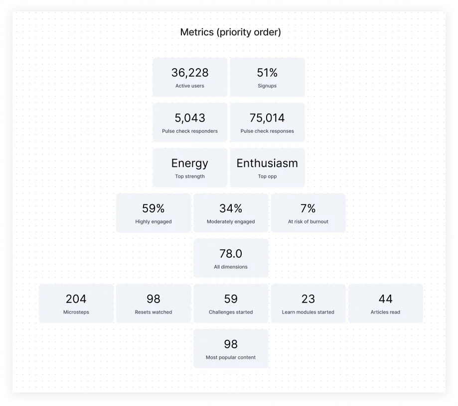
A crucial insight emerged: companies renewed not just when they saw improved well-being, but when they saw increases in usage and engagement. If we could show HR leaders how employees engaged with Thrive, we could ease the burden on CSMs and make it easier for HR leaders to justify renewal to their CEO.
Replaced terms like "highly engaged" and "at risk of burnout" with more objective labels — positive and negative responses. The old terms were too loaded; a negative check-in could be a bad day, not a burnout signal.
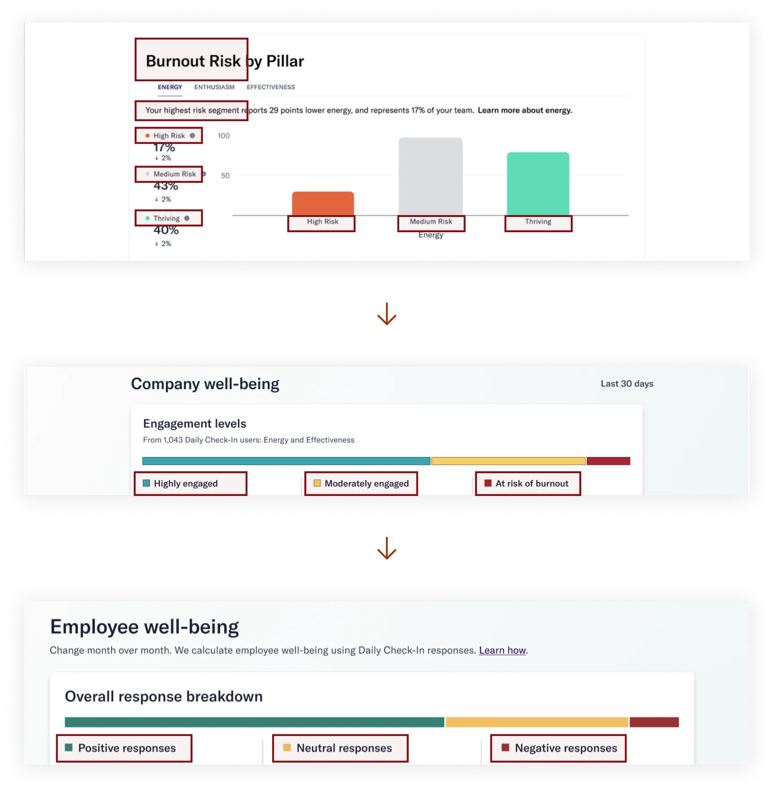
We debated leading with well-being or engagement. I designed both versions plus a combined view. After gathering feedback from CSMs, 82% preferred the combined version — so that became the default.
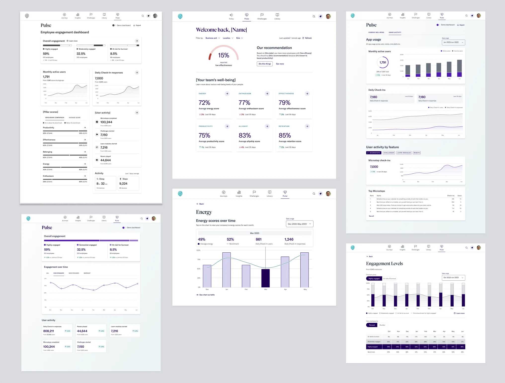
Our design system had no chart components yet. I built a data viz system from scratch, enabling faster iteration throughout the project and giving other teams reusable components for their own product areas.
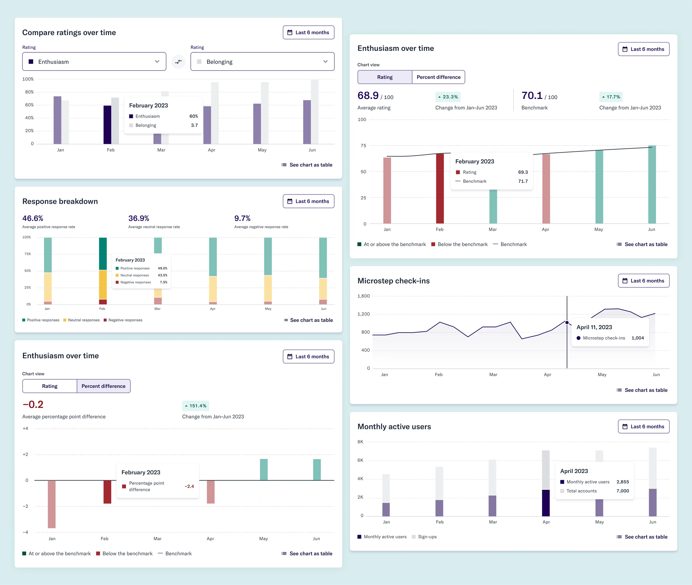
Prototyping with real customer data revealed that well-being levels often cluster near the benchmark, making differences hard to see. I designed a new chart view that made comparisons clearer and benchmarks more readable.
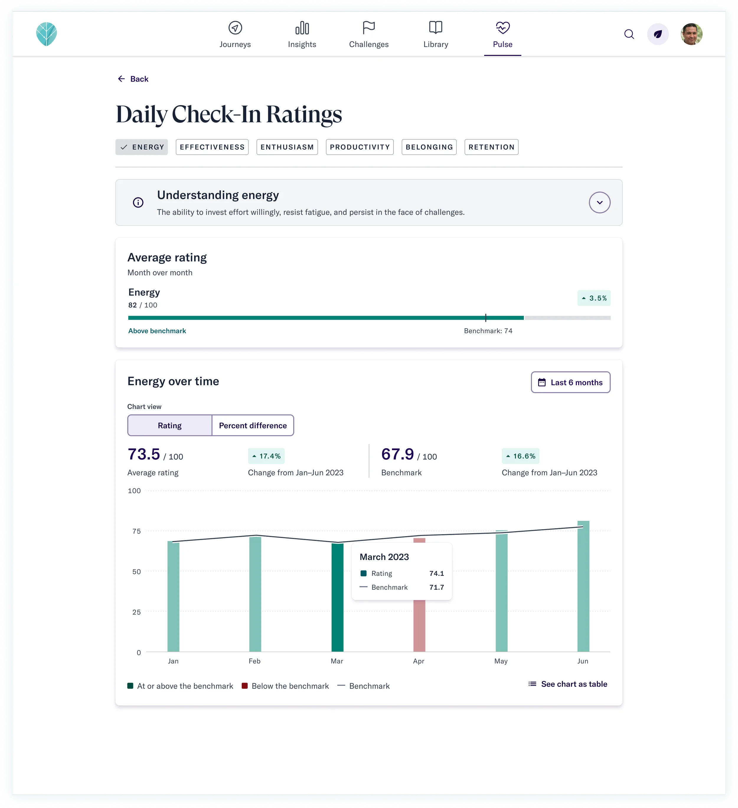
Aligned all chart designs with Nivo Charts and Material UI, ensuring the engineering team could build quickly without custom work outside our stack.
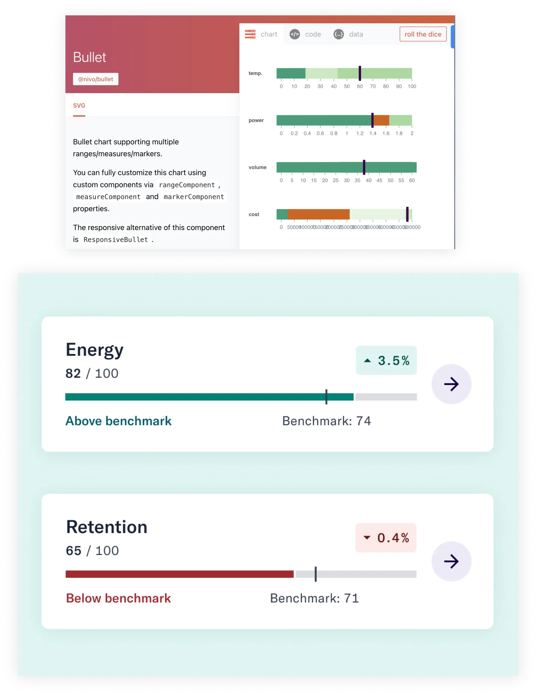
The redesigned dashboard became a self-service tool for HR leaders — removing the need to rely on CSMs for data requests, helping users justify cost and prove ROI, and directly supporting contract renewals. The anticipated 600 hours/year in CSM savings came from reduced data requests and the elimination of quarterly-call explanations.
Beyond the business metrics, the dashboard helped HR leaders identify when employees reported lower well-being so they could intervene early — translating data into real human impact.
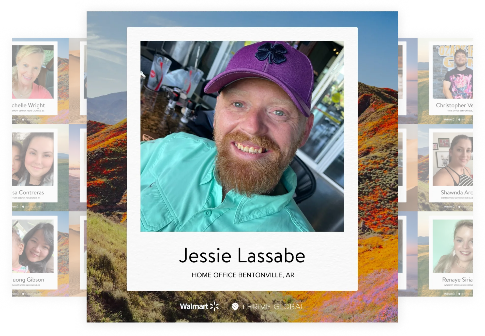